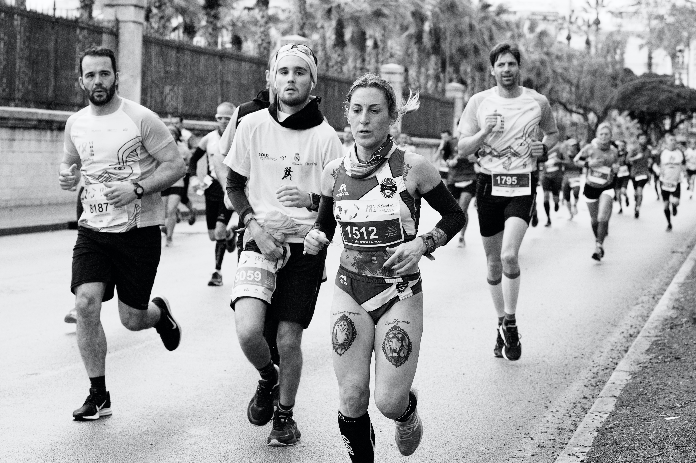
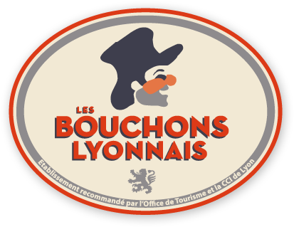
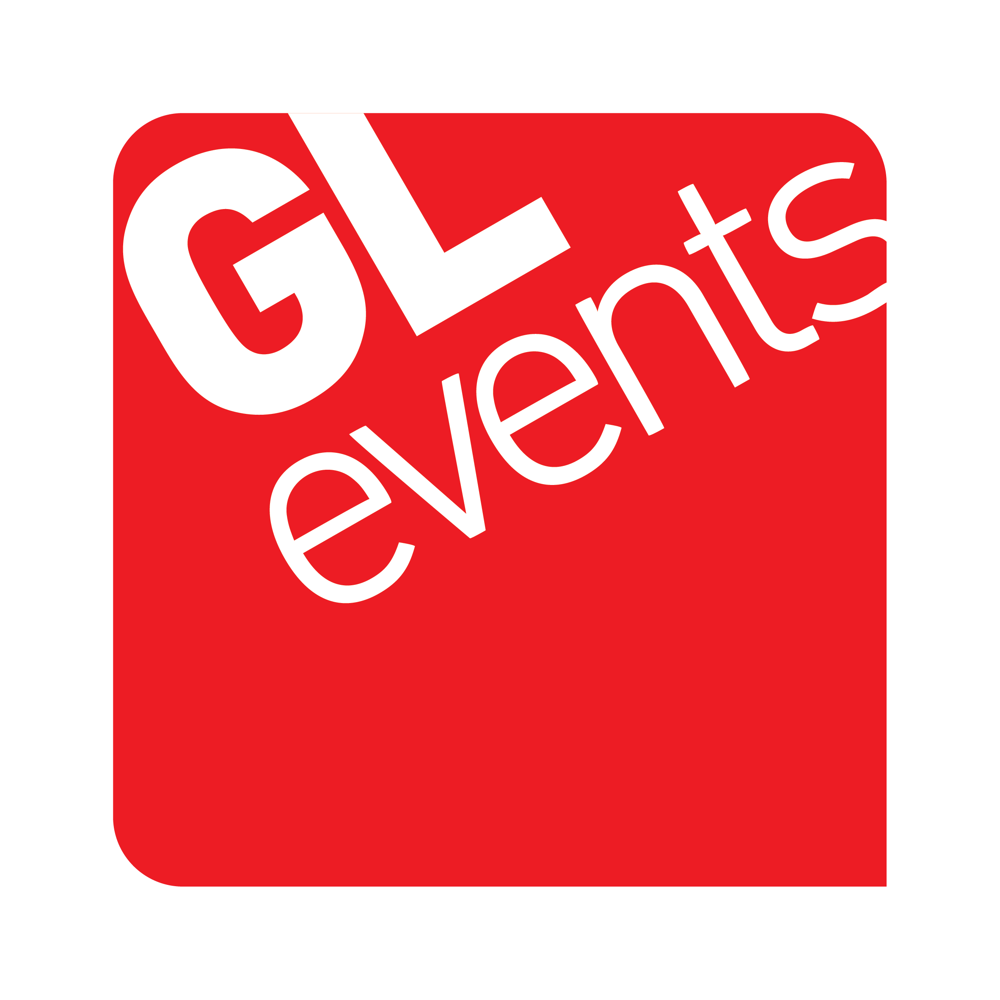
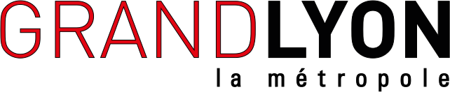
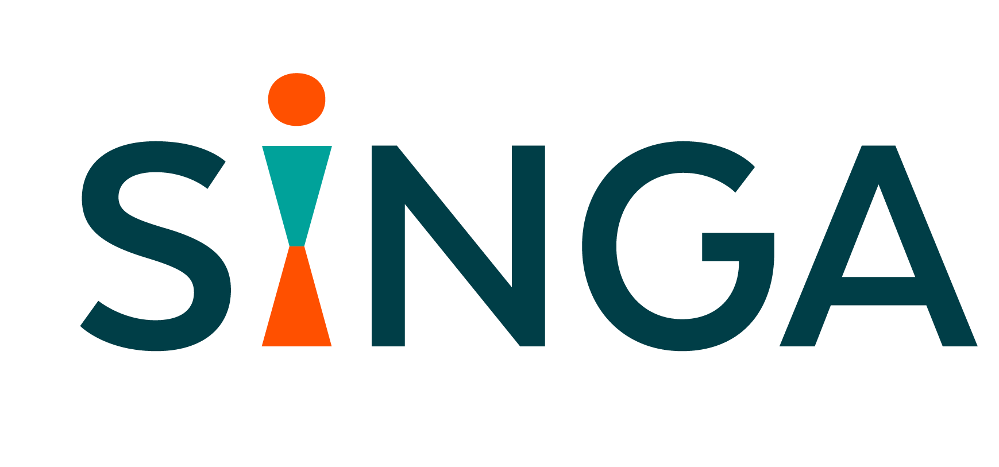
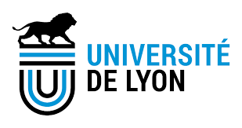
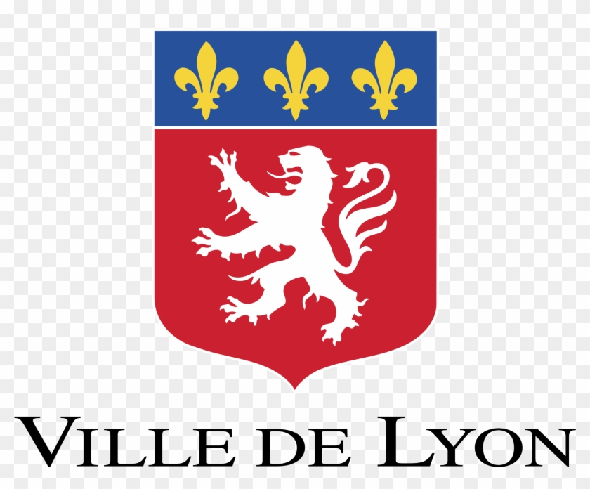

Samedi 29 avril 2023
14 km
Une course, une distance, une ville… Le Marathon de Lyon c’est avant tout la convivialité et la synergie de lyonnais toujours plus nombreux à relever le défi.
Action Solidaire: Singa Lyon

Le Marathon de Lyon soutient une association locale qui favorise la création de liens entre les personnes réfugiées et les citoyens de la société d’accueil. Toutes ces associations locales et sérieuses aident directement des enfants et des femmes près de chez nous ; grâce à vous, nous avons déjà versé plus de 80 000 euros depuis 2012.
PARTENAIRES
Merci à tous





